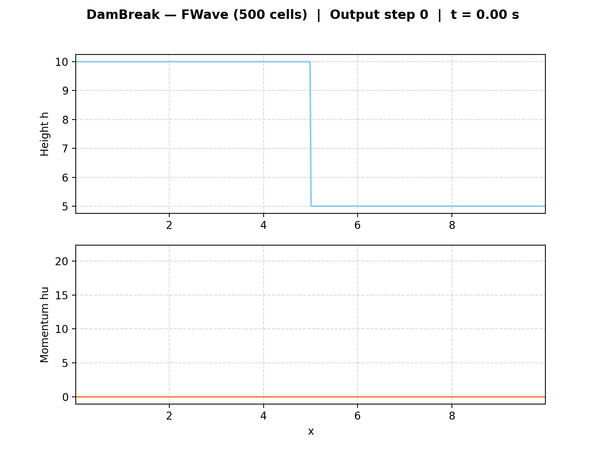
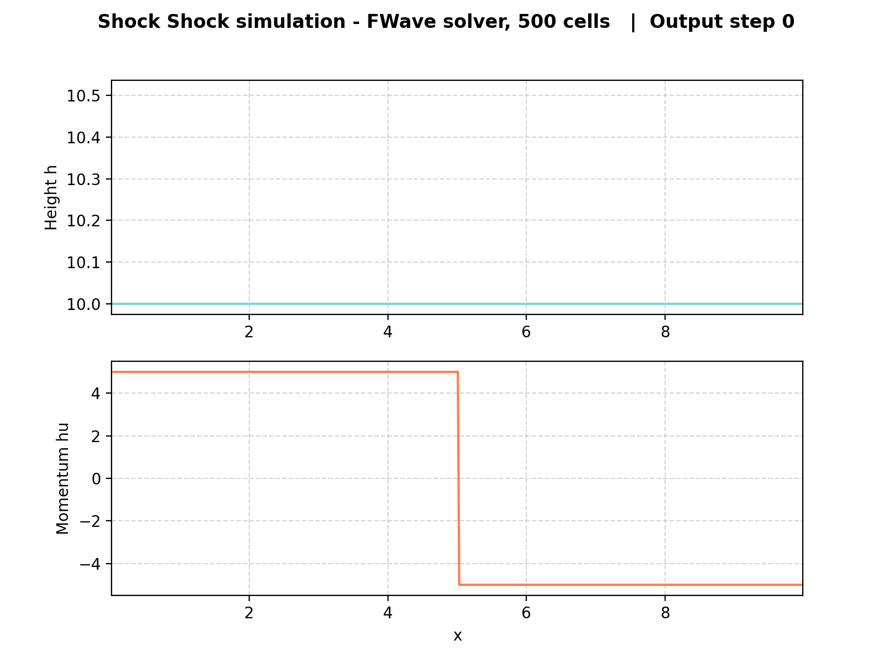
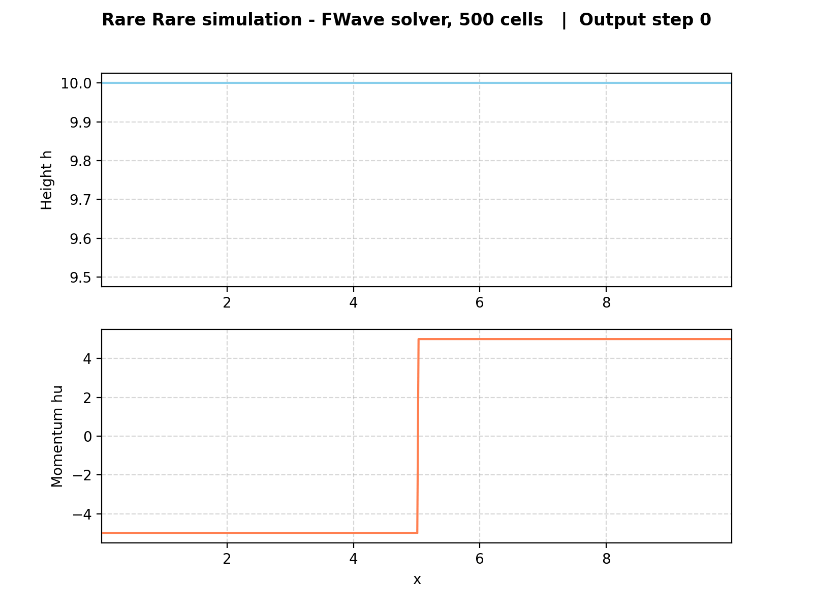

2. Finite Volume Discretization
Implementation
The one-dimensional finite volume discretization is realized in
WavePropagation1d, which manages the cell quantities, two ghost
cells at each boundary, and the time-step update. The update iterates
over all \(n+1\) edges, invokes the selected Riemann solver, and
applies the returned net-updates to the neighbouring cells. The solver
can be switched between Roe and f-wave at runtime via a string
parameter passed to timeStep.
Three Riemann setups are provided. DamBreak1d (Sec. 2.2) supports
independently configurable water heights and momenta on both sides,
which covers both the classical dam break and the 2.2.2 evacuation
scenario with a pre-existing river flow (q_r = [3.5, 0.7]).
ShockShock1d and RareRare1d (Sec. 2.1) are symmetric Riemann
problems with equal water height on both sides and antisymmetric
momentum — the two streams move towards each other (shock-shock) or
away from each other (rare-rare). All setups follow the convention
\(x \leq x_{\text{dis}}\) for the left state.
The command-line interface in main.cpp selects a setup via -p
with its parameters as positional arguments. For DamBreak, the
momenta on both sides are optional (default zero), so the classical
dam break and the 2.2.2 scenario use the same setup class. Simulation
results are written as CSV snapshots at roughly 20 evenly spaced
points in time.
Unit Tests
Each setup has its own test file tagged with the class name
([DamBreak1d], [ShockShock1d], [RareRare1d]). The tests
are organized into Catch2 SECTION blocks covering constant height
on both sides, the expected sign of the momentum on each side,
antisymmetry across the discontinuity, assignment of the discontinuity
cell itself to the left state, zero y-momentum, and time-independence
of the initial state. DamBreak1d additionally has a test case for
the extended signature with non-zero momentum on both sides.
Results & Visualizations
Dambreak simulation with FWave solver and 500 cells

Shock Shock simulation with FWave solver and 500 cells

Rare Rare simulation with FWave solver and 500 cells

Individual Contributions
Yannik Köllmann: Implementation of 2.1.1 setups
ShockShock1dandRareRare1d([ShockShock1d],[RareRare1d]) with corresponding unit tests, copied from theDamBreak1dtemplate and adapted for shock-shock and rare-rare Riemann problems. Extension ofDamBreak1dwith configurable left and right momentum parameters (m_momentumLeft,m_momentumRight) to enable setups such as the 2.2.2 evacuation scenario with a pre-existing river flow. Added corresponding unit tests and updated the command-line interface inmain.cppto accept optionalhuLeft/huRightarguments. Integrated the new setup files into the SCons build configuration.Jan Vogt:
Mika Brückner: Integration of f-wave solver into
WavePropagation1d.h,WavePropagation1d.cppandWavePropagation1d.test.cpp([WaveProp1dFWave]). Implementation of commandline arguments with flags for problem and solver mode tomain.cpp. Implementation ofvisualize_simulation.pyscript for visualizing simulation results frommain.cpp. Simulations and visualizations for Dambreak, ShockShock and RareRare problem with f-wave solver.